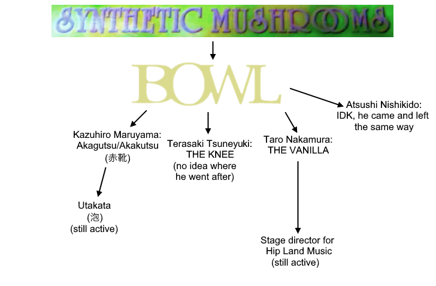

Welcome to the nerdiest part of the website: the BOWL Archive.
BOWL is a somewhat obscure japanese rock band from 2001, who had a slow start with several singles from 2001 through 2004 until they finally made their big break in 2005 by making the second opening for Yu-Gi-Oh! GX, 99%. They followed that up in 2006 by making the third GX opening, Teardrop. They released their last album Teardrop in December 2006 and ended their run in 2007 with one last live show at Shibuya DESEO.
The band consisted of 4 guys: Kazuhiro Maruyama (丸山和弘), vocalist and guitarist, Taro Nakamura (中村太郎), guitarist and backing vocals (who seems to be playing on a Fender Telecaster Sunburst), Atsushi Nishikido (錦戸篤), bassist and backing vocals (who seems to be playing on a white Fender Precision Bass) and Tsuneyuki Terasaki (寺崎経幸), drummer and backing vocals. Their influences were Weezer (apparently, UP!! was very much reminiscent of Weezer, even having English lyrics), Mad Capsule Markets (but it doesn't really show, honestly) and The Smashing Pumpkins. Fun fact, Maruyama and Nishikido actually both replaced, respectively, the previous guitarist and bassist (who are just unknown).
Here's a burning question you might have: What does BOWL mean? Well, according to Maruyama, it's "a vessel in which the members gather, as they all have different personalities. Also, it's easy to remember."
Here is a not-so-quick run through their discography (you will see some names come up really often):
...happy? (12/2001):
- BOROBORO / ボロボロ / Tattered
- forget
howdy howdy boo (08/2002):
happy happy (12/2002):
- happy happy
- in my life
- shake it
Kanto Guitar Eros Disk. 2 (03/2003):
- Tone / 遠音 / Distant Sound (absolutely and completely lost, we're never gonna get this one unless a miracle happens)
Jougen no Tsuki (05/2004):
99% (08/2005):
Teardrop (11/2006):
UP!! (11/2003): (links soon)
Sono Mukou e (12/2005):
Teardrop (12/2006):
As you can see, there are a lot of unavailable songs in here. That is because this band was not very well archived. None of the songs from UP!!, despite being a somewhat available album, are uploaded online, on YouTube or on NicoNico. Hell, all the singles from before 2004 are literally just gone because 2 of them were only posted online and no one saved them, and the other 2 were not even for sale.
BOWL actually broke up because of creative differences, something which was already hinted at in an old interview by Nishikido: "To be honest, we didn't overlap at all. We liked different kinds of music."

After BOWL, Maruyama started a band called
Akagutsu (or Akakutsu, seemingly they romanized it as Akagutsu for whatever reason) with none of the members of BOWL (they kinda just entirely split away...). It was a 3 member band consisting of him on vocals and guitar, Suzuki Toyoki on bass and Daisuke Sasaki on drums. The website describes it as "Rock guitar riffs, lyrical melodies, and strong, danceable rhythmic arrangements. A simple three-piece band, a trinity of next-generation ROCK." It is very much an evolution of the BOWL sound, going from early-to-mid 2000's alt rock/power-pop similar to Weezer to more conventional era appropriate J-Rock. It lasted until around 2014, when Akagutsu disbanded and Maruyama started a new band with Kentaro Satou on drums (and no one else really). It seems that they're still around to this day, as their last live performance was in 2019 but vk.gy still lists them as being active. As for the other BOWL members, Terasaki Tsuneyuki went on to be a drummer for The Knee (couldn't find any info on them) but the timeline stopped for him at that band on vk.gy. For Taro Nakamura, he went on to play with The Vanilla, replacing their rhythm guitarist, and after that he went on to become stage director for Hip Land Music, where he still works there to this day, I believe. As for Atsushi Nishikido, I have no clue.
And that's about all I know about BOWL. The last question you might have is: why? Why make a whole 10 minute video about BOWL? Who is going to care about this old japanese band? Well, the thing is, I learned about BOWL the same way most people did back then: Yu-Gi-Oh! GX. GX is my favorite anime, my favorite show ever. It has had a huge impact on me, and it really helped me back when I was going through a seriously tough time in life. BOWL's music touched me emotionally (this is probably not the best word for it). I would listen to 99% and Teardrop a lot, which led me down this rabbit hole of BOWL songs. I kinda became obsessed, and it's kinda my thing now, being the "BOWL Historian".
This band, while they don't know me (obviously), have really changed my life and their music means a lot to me. Everything about it is so great: the vocals, the guitars, the solos, the drums, the bass, the composition. French is my first language, english my second and I don't speak japanese at all, so I got by with translators. Even without a translator I could still really feel the emotion in all of the songs. I wish they hadn't disbanded and kept going after 2007, but who really knows if they would have kept being as good as they were. A lot of my favorite bands go this way, Rhapsody, Weezer... Sometimes I wonder if it's not best for them to have ended at like, Album 5, or something. In their peak. But tangents aside, I hope you can understand that this band means a lot to me. And besides the Youtube user Jaden Yuki, who has reuploaded a good amount of their discography, no one seemingly cared enough to archive BOWL's stuff. This is why I took on the task. So, if you're reading this, from the bottom of my heart. Thank you so much. Thank you for reading all my garbage that I put way too much time into. It really really means a lot. And thank you BOWL for impacting me so much. I will never forget you.